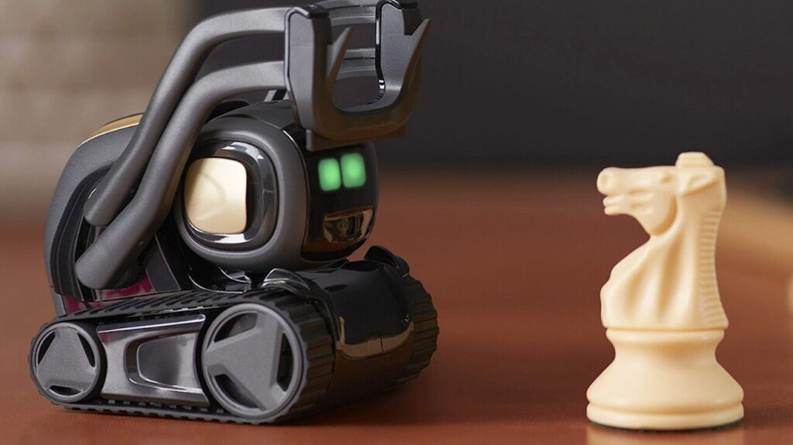
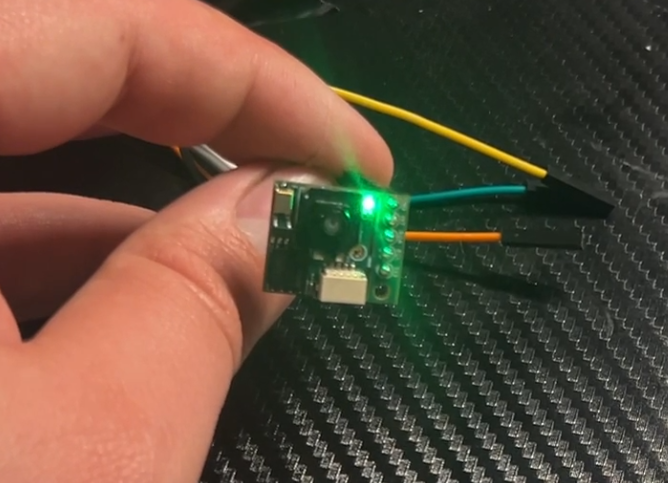
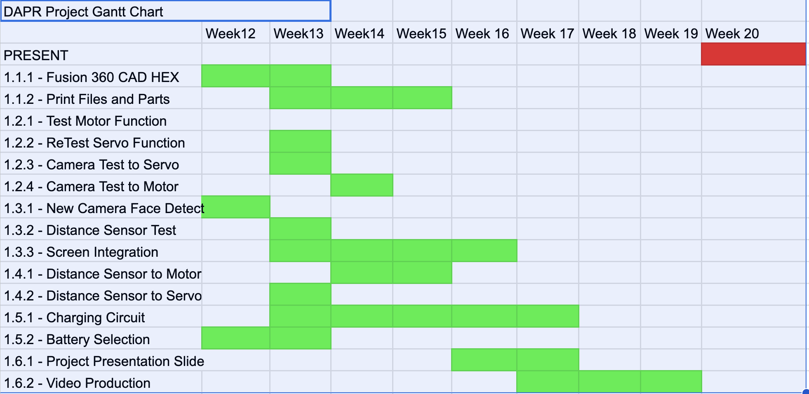
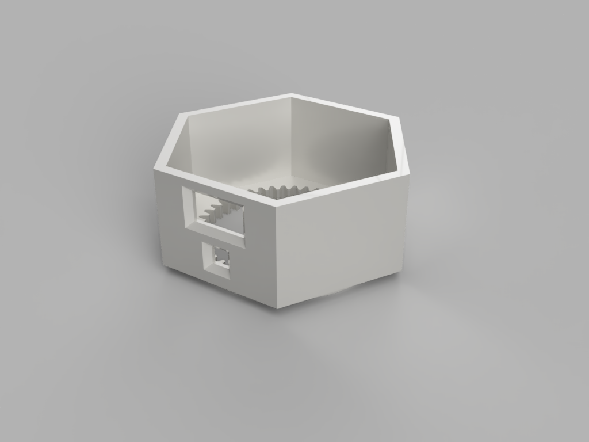
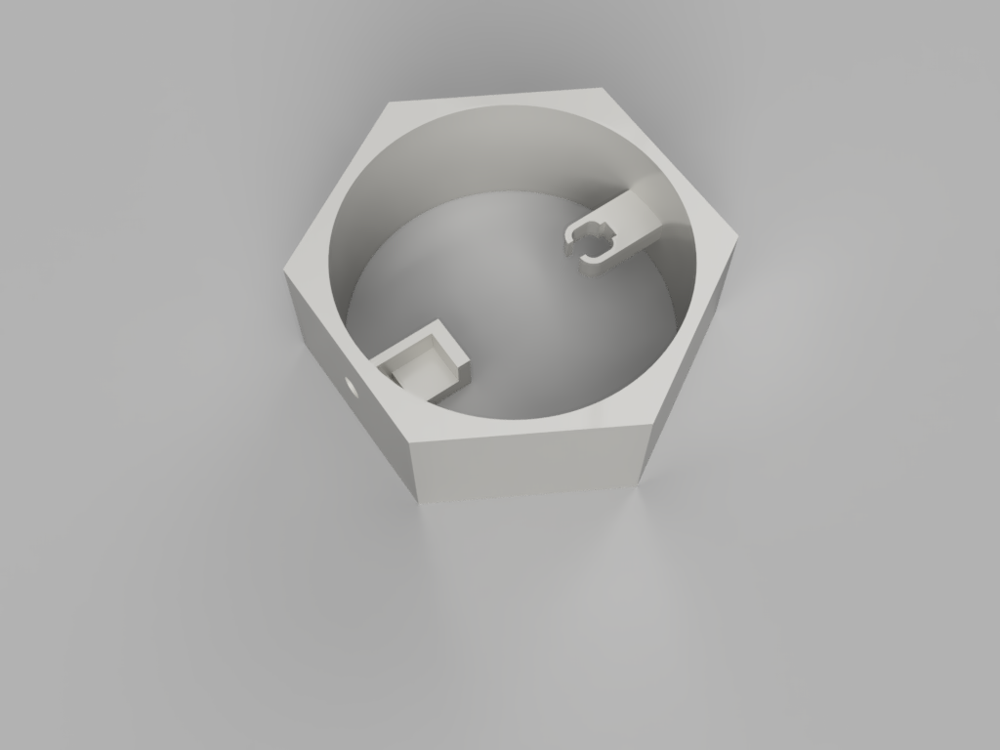
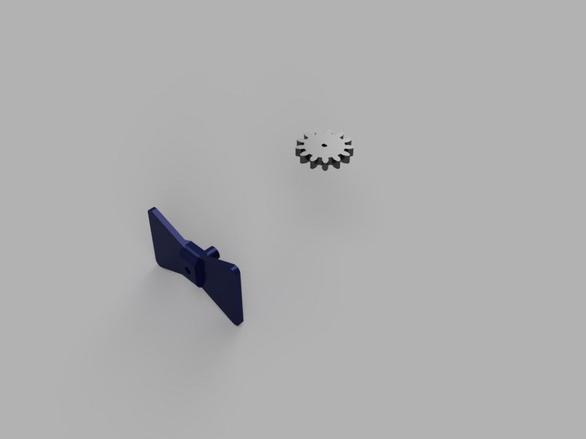
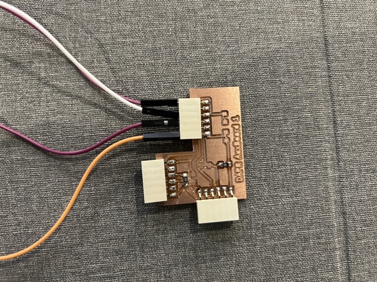

The initial idea for this project was a desktop companion robot, one to sit around the desk and keep you entertained/assist on difficult days. As I work on this project I think I will switch this design to one that is along the lines of a tamogatchi to start. These have interactivity, a set of images that render on a simple pixel screen, and some rudimentary AI probably random number generated. I want it to maintain its cute demeanor. But I do want it to be supremely customizable for anyone that interacts with the robot.
Final Project Concept: Desktop Assistant Pet - Robot (aka DAP-R)
When I was told that I would be able to build anything in this project, I knew exactly what I wanted to do. For a while I had been exploring the idea of making an astromech droid for the lab. However, making a full sized 4 foot tall droid could be a bit of a daunting task. That is where my ideas led to companion robots.
There has been some exploration into the idea of companion robots to assist people with loneliness as well as household tasks. And this also throws me back to childhood when companies would release little robotic dogs. This robot will be a similar device, but let us call him a desktop robot. He will sit and move around your desk and interact with you and anyone around you. The goal of this is not to truly create a companion, but to possible create an educational platform that has the psychological effect of a tamogatchi, but lives fully in the physical realm.
The Inspiration
For a while my instagram feed has been filled with ads for different companion robots. The most common ones being VECTOR and COZMO from Digital Dream Labs

Now the problem is, I believe paying $400 for one of these devices is not a reasonable cost. This may be a commodity, but leveraged well the unit can be a more affordable companion and pet assistant.
My Requirements for DAP-R
Whenever you are working on a design you need a minimum acceptable product that you would deliver to the client. In this case I am choosing a very simplified version of my DAP-R robot to meet these needs. How I go about this is immaterial but it is needed for the functional use of DAP-R.
The Transition to a Modular Design
In week 2 we were asked to design the final project that we are working on to CAD. You can see more of the process of me doing this here but I ended up switching from a hidden box design to more of a modular slotted design.
Part of the reasoning behind this was to create not just a companion, but one that can be modified to your needs with different components. This would be a great addition I think but complicated my general design due to making all sorts of pieces fit into the unified model. Think of LittleBits but for a robot.
The Transition to the Hex Design
In week 6 we were asked to code the QUENTORRES board and as part of this I learned how to control DAP-R's Bowtie unit.
But this small project led me to switch the idea for my design to something more static. Something along the lines of the "Astromech Droids" in Star Wars.
A design like this would let me stack up the mechanisms inside of the robot and have a more desktop design with an aesthetically pleasing package. Below is a sketch of the proposed design and next I will have to re-do my Fusion project to create this new model.
Making the Eyes Work!
I wanted to give my robot emotion so on the Output Devices week I worked on giving him working eyes using a small screen. I think it came out excellent!
Letting DAP-R Detect a Person
This week I worked on having DAP-r see using a Mu Vision Sensor. I got this system to work but unfortunately it needed a Arduino microcontroller and I do not want to use that so I am back to the drawing board soon.
Unfortunately the Mu Vision sensor you see in this video is only capable of working with the Arduino architecture and its libraries cannot work with the RP2040. So I had to look around and find a person sensor module that can communicate with the RP 2040.
In my searches I stumbled across the "Person Sensor" from sparkfun. This one is capable of speaking with any board and uses the I2C framework to communicate with the system. This one is programmed using the libraries here in the Person Sensor GitHub page.
The system detects almost exactly like the Mu Vision sensor, but it can detect more than one person. It then sets up a bounding box around them. It also has a handy light that goes off when it is detecting a person or not, pictured below.

Using the bounding box that it creates and a simple if - else loop I created a program for it to have a motor turn one way if the detected person was to the left of center and another way if they were to the right. If you look closely at the video below you can see the motor with black tape turning different directions.
With this working I was very excited to get this on DAPR and have him be able to stay focused on the person he was following. Unfortunately here I hit a snag.
When connecting all my components to the board, for some reason when the Person sensor was connected with more than one I2C device to the XIAO2040 no I2C devices were detected. I tried several different configurations to fix this. Pull up resistors, switching connectors, switching control chips, and more. The only thing that seemed to be semi-stable was using the SparkFun qwiic connection protocol but I did not like the low reliability of the program. So I had to make a decision, I chose to switch sensors.
Switching to a Distance Sensor
In my parts purchases I also ordered a distance sensor to be used as a sensor on the bottom of DAP-R to keep him from falling off of tables when he had wheels. Because it was available I just decided to swap it into the system. Unfortunately I knew that I would lose the ability to use the face tracking, but I could detect when there was a person in range and DAP-R could react. I threw together a quick circuit to see if DAP-R reacted to the distance sensor using the I2C screen and it was a resounding success!
Now that this screen worked I started adding systems to it and eventually got all the required subsystems working. Sensor, Screen, Motor, Servo.
The Planning Cycle
Now that all the different parts are working, things need to be integrated so breaking things down into components is the best way of doing this. I will be using this following Gantt chart to guide my work:
The Gantt

Simplification of the Design
Seeing how much difficulties might go into making a fully moving astromech in the time constraint we have here I also made the decision to not just minimize the size of the robot, but to also remove its roving capabilities. Although having a fully wandering robot is the dream, I think that just getting it to work and react to a person's presence is a sufficient start for this program.
Another caveat I made for this unit is its ability to interact verbally with a person. Though that is also something I truly want in the final design with work responsibilities that added too much time to the scope.
A Breakdown of the Chassis
Currently the Chassis of the DAPR unit is broken into 4 major components not including motors/servos/circuits
This video breaks down the units and is only missing the circuits that I need to rework to be something viable.
The "Head"
This unit will house one input unit and one output unit. The larger hole on the top will hold the screen that you can see in action in Output Week. It will be for emotive interaction and will communicate with the user by making facial expressions.
This also houses the input camera, a "Person Sensor" that creates a bounding box around a persons face and will let DAPR follow them visually. Trying to center the person sensed into a bounding box.

The "Body"
The body will house most of the movement units of DAPR. The head controlling motor which is a small scale N20 Motor. It also holds the most important servo. The Bowtie Control Unit! This unit will assist in emoting for the robot and allow the bot to have a few idle animations if no person is detected.

The Control Gear and Bowtie Unit
Both of these smaller units will be held internal to the robot and allow for motion and emotion. THe bowtie unit will wiggle if a person is seen and the gear will be attached to a small motor that will let the head follow a person.

Simple Chassis System's Testing
The two components of the main body that had movement needed to be testing before full integration, the two units needed to be printed and tested. I also needed to test sizing to see if the design of my motors and servo were accurate. In placing this the slot for the servo was too small but it looked like the motor fit perfectly.
Luckily this fit so it was time to do simple systems test for the gear and motor assembly as well as the servo.
Motor Test
Servo Test
Seeing how both of these are functioning properly, I did some updates to the design of the robot and now DAP-R looks something more like this:
DAPR (Tentative) Final Design
Now he has even more of a "dapper" design
Placing and Connecting all layers
Each layer of DAP-R contained some subsystem that was required for his use. The top of the design was to house the screen. I added a small band in the middle to help with cable management and to lead the wire down to the bottom. This was also the location for the teeth that match up to the gear so that DAP-R's head can move.
DAP-R's second layer is where his motor and servo unit are attached. This controls all movement and the cables are routed around the outside. DAP-R's bowtie also connects to the servo on this layer.
The final base layer is the housing for DAP-R's control board and his distance sensor. Here both units live and cables are either routed down the center or around the side of the chassis.
The true final body
Electrical
Currently I had a chip in v3 that is designed to work for the electrical for two motors a servo and one sensor. But this was designed for a previous version of the robot. Currently I am working on changing how DAPR works so that the robot will not hit the problems of the lazy susan where cables get tangled and create a mess for everything.
The Idea:
My current idea is to create a two tiered chip system that will minimize the movement of cables as well as adding a physical stop to rotation so that it will not rip cables should someone want to move in circles around DAPR's head.
A simplified description of what I thing I will do is broken into the two units, head and body.
Head Electrical
All of my circuit components use I2C because of this I am considering using the Qwiic connector system. I will be connecting both the screen and the camera to a central chip that will be fastened to a bar that is sitting across the center of the head.
This will then have one cable that is dropped down to the main board in the body unit since that should be stationary.
Body Electrical
The unit in the body will hold the control chip (A XIAO RP2040) an HBridge for the motor and the connects for the servo as well as the receiving cable for the upper board.
Right now, the idea for power is that it will be provided by a rechargable power bank that fits within the chassis. I have not calculated the total Watts pulled by the system so I will have to do that to be sure the battery and RP2040 can handle them all.
The Final Circuits
I decided to do as shown above and break the board up into two separate boards. One main board running the servo, motor, taking in power, and having an uplink for expandable I2C. The second just being a relay for I2C and the two pull up circuits required for this.
The Main Board
If you would like to download the Main Board you can find it here
The Aux Board
If you would like the Auxiliary board please find the files Here
Next I need to mill and test these final boards.
Milled Boards
After this I milled a board and it came out like so:
Unfortunately when I did a systems test it seems there was an issue somewhere in my H-Bridge. The motor does not run. I checked with the image of a H-bridge that was posted on the output devices week and it seems that I connected the bottom left pin to 5V incorrectly. So I pulled the lead and jumped it to the correct location using a cable. I will be recutting the circuit after.
Here I fixed that error but continuing with the systems check it still was not working appropriately. So I have some work to do in the code of my circuit it seems.

Unfortunately upon testing this board there are some errors in it too and I will have to test the connections. I think the problem is with where I put the pull up resistors.
The infinite board cycle
Or better said, what felt infinite. Through the process of debugging, moving parts arounds, simplifying connections, and changing geometry of parts I worked my way through 8 iterations of the DAP-R Board.
At the end what was most functional was a board with pinouts for all the breakout components. The LEDs on the top left I used as status indicators when checking things and running different loops in my code. Without those It would be very difficult to track what was going on and I could see if there was a part failing or running incorrectly.
This is the board still currently in the DAP-R System and I belive I will use it to prototype two or three more upgrades after the end of the program.
2d CNC - The Bowtie
Now, I was not liking how the bowtie was coming out on my 3d Printer so I decided to recreate it using the laser cutter. I will have to 3d print the rod that connects to the servo in the body but I think that will work out well in tandem. First thing I did was get the dxf for the sketch that I was using for the bowtie.
Doing things this way actually came out with a fun side effect. DAP-R now has a new Interchangable Bowtie Unit. Where I can laser cut any material bowtie and place it on the 3d-printed adaptor piece.
These are just two examples in Blue Acrylic and Walnut
Bill of Materials
The Files
Should you want to make a DAP-R of your own, below are all the files you may need for this:
This was an excellent project because it helped me finally design a robot of my own, which I have never been able to do at work from beginning to end. This knocked a lot of rust off and opened opportunities for a lot more work that I could do in the future. It also made me learn a lot more than I thought I would but some of those outcomes are below:
More organized programming in integrated programming systems
Limitation of integrated programming chipsets, RP2040 v ESP32 v Arduino/ARM chips
More organized design in Fusion 360 and part interaction for a multiple part project
Renderings and organization for Fusion files
Transferring files for Fusion to laser cutting (dxf outputs)
Tolerencing with different 3d printers
Tolerencing with laser cutting
Working with screens controlled by integrated circuits.
Getting motor feedback to control systems.
Dissemination plan
I do not plan on using this project for profit. The goal is for DAP-R to live in the Roberto C. Goizueta Innivation Center and act as a guide for people coming to take tours of the space. Right now he is just an oddity that lives among all the other projects
I will be posting more about him on my social media: @perezrobotics. And I will be asking for the school to post about him on their social media.
Before I do any of this though, he needs a lot of upgrades!
Future Opportunities
Those upgrades are where my future opportunities come in and I have a timeline for that running now:
Summer 2024: Finish the object and person detection, switch to a full Raspberry Pi Chip
Fall 2024: WOrk on conversational skills with DAP-R. This means choosing an Alexa API or LLM API to train him to converse with visitors.
Fall 2024-Spring 2025: Upscale size and work on the motion unit.
The goal is to turn him into something like an astromech droid from the Star Wars series. Two leg mounted wheels and casters on the front. I may do a mecanum system instead depending on how I am feeling. This is like the droid b2em0 in star wars as well.
Spring 2025-beyond: Refinements to system as technology improves. Create an educational platform with DAP-R for my students.
How to make these "probabilities" from "possiblities"
To make all these big plans happen what I will be doing is cloning over this website to another host and keep tracking my work as we have been doing here. I have learned that tracking and maintaining a project portfolio helps keep me motivated beyond all doubt.
I will also stay in connection with my network and ask for help as needed. I already own the url perezrobotics.com (not active) so I will be using it to host all of this along with more resources I create.
I am very thankful for being part of this program and I think DAP-R is too because he was finally brought from my brain to reality!